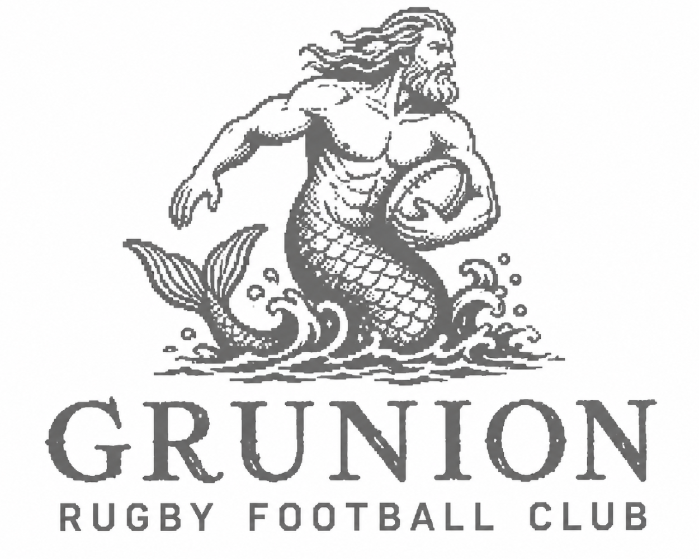
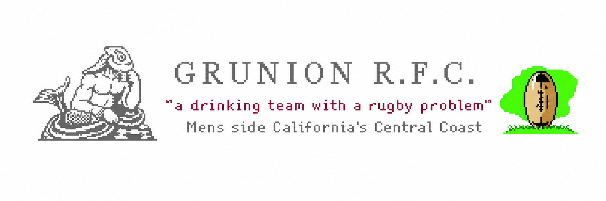

THANKS FROM THE DEEP
Your subscription has been confirmed. You have been hauled aboard the list and will hear from the Grunion soon.
Click here to return to the site, before the tide changes and someone asks you for dues.


Your subscription has been confirmed. You have been hauled aboard the list and will hear from the Grunion soon.
Click here to return to the site, before the tide changes and someone asks you for dues.